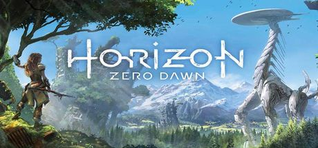
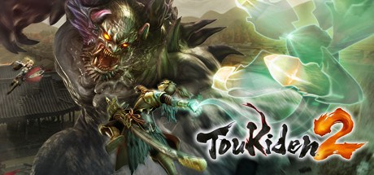

Novedades mas populares
Nier Automata
Es un videojuego de rol de acción de 2017 desarrollado por PlatinumGames y publicado por Square Enix para Microsoft Windows y PlayStation 4. Aunque en un principio la distribuidora planeó su lanzamiento para noviembre de 2016, finalmente lo publicó el 23 de febrero de 2017 en Japón. La edición de consola se publicó el 7 de marzo en Norteamérica y el 10 de ese mes en el resto del mundo. La versión de Microsoft Windows se publicó el 17 de marzo en Steam. El videojuego comparte el mismo universo que Nier, una serie derivada de la saga Drakengard. La historia de sigue las batallas del androide de combate 2B, su compañero 9S, y el obsoleto prototipo A2, en una guerra de poder entre las máquinas creadas por invasores de otro mundo y los restos de la humanidad.
$185.000
Tom Clancy's Ghost Recon Wildlands
Es un videojuego de disparos táctico de mundo abierto en desarrollo por Ubisoft Paris y distribuido por Ubisoft para Microsoft Windows, PlayStation 4 y Xbox One. Será la décima entrega de la franquicia de Tom Clancy's Ghost Recon y el primer juego en incluir un ambiente de mundo abierto. El videojuego dejara atrás el escenario futurista presentado en Tom Clancy's Ghost Recon Advanced Warfighter e incluirá un escenario similar al que tenía el original. Su fecha de lanzamiento esta prevista para el 7 de marzo de 2017.
$139.900
For Honor
Es un videojuego de acción en tercera persona que destaca por su sistema de combate tridireccional. Ha sido desarrollado por Ubisoft Montreal y distribuido por Ubisoft para las plataformas Microsoft Windows, PlayStation 4 y Xbox One. Fue anunciado oficialmente en el E3 de 2015 y salió a la venta el 14 de febrero de 2017. El juego se centra en el combate medieval y consta de tres facciones a las cuales los jugadores podrán escoger entre caballero, samurai o vikingo. A demas de presentar unos grandes graficos típicos de ubisoft y una seleccion de luchadores todos cuerpo a cuerpo y multiples modos de juego que pueden variar por semana o eventos especiales que ademas de eso algunos se adquieren poderes como mucha velocidad.
$139.900

Horizon Zero Dawn
Es un videojuego de acción, aventura y de mundo abierto desarrollado por Guerrilla Games y distribuido por Sony Interactive Entertainment, únicamente para PlayStation 4. Inicialmente saldría a la venta a finales de 2016, pero según Hermen Hulst,1 director ejecutivo de Guerrilla Games, "la nueva fecha nos da el tiempo extra requerido para completar y mejorar el juego", por lo que finalmente se anunció que saldrá a la venta a finales de febrero de 2017.2 Es la primera propiedad intelectual creada por Guerrilla Games desde la serie Killzone en 2004 y fue anunciado por primera vez en el E3 2015.3 El juego está protagonizado por Aloy, una guerrera paria de la tribu de los Nora.
$180.000
Gear of Wars 4
Es un videojuego de acción y shooter en tercera persona desarrollado por The Coalition y distribuido por Microsoft lanzado el 11 de octubre del 2016 para Xbox One y Windows 10. Es el primer videojuego de la saga del que es propietario Microsoft y el primero para su consola de octava generación. El 15 de junio de 2015, en la conferencia del E3, se mostró un "gameplay" del mismo bajo el título Gears 4, siendo este un diminutivo pues en la pagina web oficial figuraba como Gears of War 4.Secuela de Gears of War 3, añade nuevos personajes, enemigos, armamento y mecánicas de juego
$120.000

Toukiden 2
Es la tercera entrega principal de la serie de Toukiden. Se anunció por primera vez al público en el escenario de la Conferencia de Prensa de la SCEJA de 2015.Los desarrolladores de la serie regresan. Kenichi Ogasawara es el productor general, Takashi Morinaka es el productor y Kazutshi Sekiguchi es el director. Hidari sigue siendo el principal diseñador de personajes.
$109.000
Dark Souls 3
Es un videojuego de rol de acción desarrollado por FromSoftware y publicado por Bandai Namco Entertainment para PlayStation 4, Xbox One y Microsoft Windows. Es la cuarta entrega en la Saga Souls1 , Dark Souls III fue lanzado en Japón en marzo de 2016, y de manera mundial en abril del mismo año.Dark Souls III fue un éxito tanto de critica como de ventas, con la critica nombrando a este más un digno y adecuado final para la saga. Es el juego de Namco Bandai que más rápido se ha vendido en su historia, vendiendo más de tres millones de copias en todo el mundo en menos de dos meses tras su lanzamiento.
$190.900
The Last Guardian
Conocido originalmente en idioma Japonés como Hitokui no Ōwashi Trico, (人喰いの大鷲トリコ Hitokui no Ōwashi Trico, literalmente "La gran águila devora-hombres Toriko"), y referido previamente por el título de trabajo Proyecto Trico, es un videojuego en desarrollo, por la empresa genDESIGN y publicado por Sony Computer Entertainment. El título está siendo diseñado y dirigido por el diseñador japones Fumito Ueda, y se espera que comparta elementos estilísticos, temáticos y de jugabilidad con sus trabajos anteriores, Ico y Shadow of the Colossus, aunque se desconoce si va a estar directamente relacionado con cualquiera de los dos títulos anteriores.
$160.000